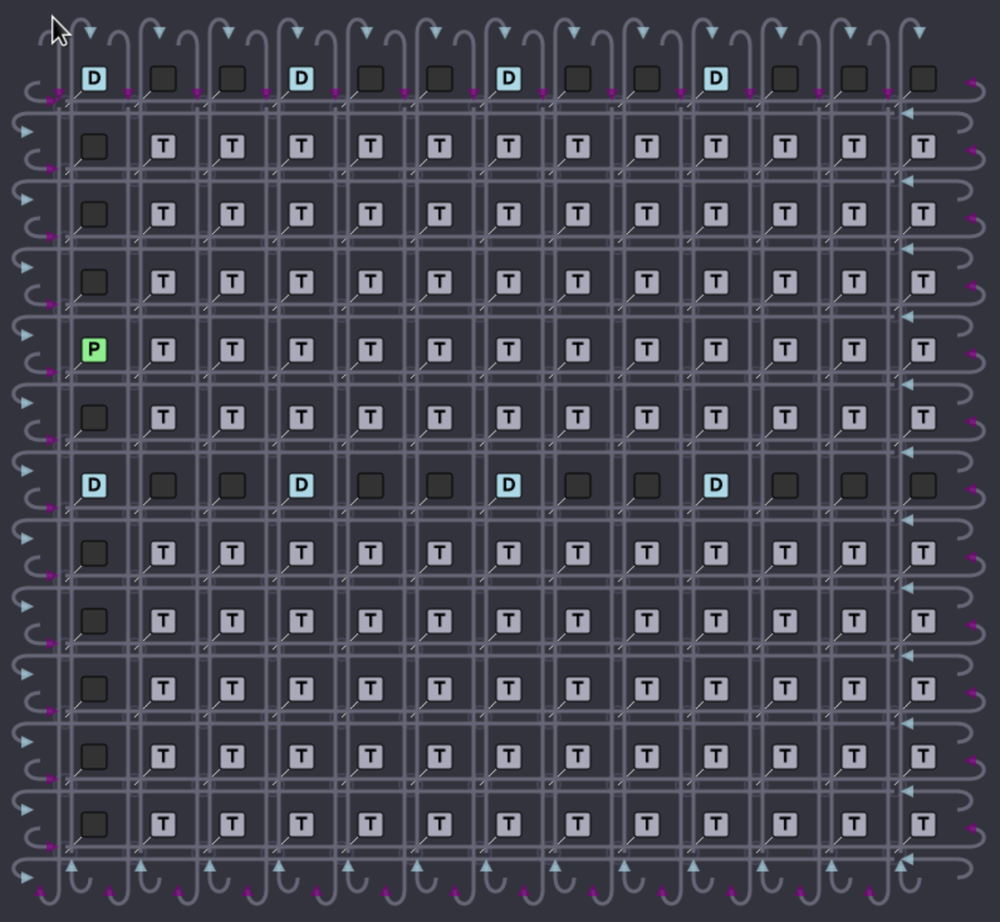

Hardware Overview
In order to get the most out of Buda, it is important to have a basic understanding of Tenstorrent hardware.
A typical Tenstorrent chip is divided into a rectangular grid of compute cores, called Tensix ™. The Tensix cores are connected with two torus-shaped NOC, going in opposite directions. Some locations in the grid are dedicated to non-compute functionality, such as DRAM, PCIe, and Ethernet interfaces, and some are left empty. Below is the illustration of Grayskull ™ grid, which is the first-generation Tenstorrent chip.

Each Tensix core contains a high-density tensor math unit (FPU) which performs most of the heavy lifting, a SIMD engine (SFPU), five Risc-V CPU cores, and a large local memory storage (L1). A typical FPU math operation has one or two operands which are read (unpacked) from local memory into source registers, and the computed results are written and accumulated to destination registers, until explicitly copied (packed) to local memory. NOC is programmed with connections (pipes) between cores so that outputs of one operation are automatically pushed to the next operation that needs them.